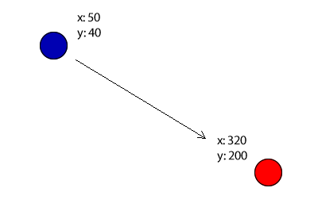
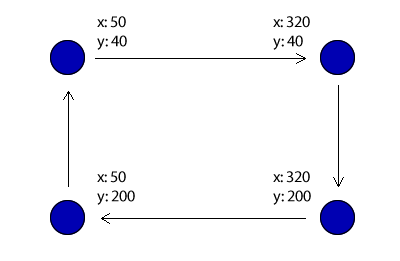
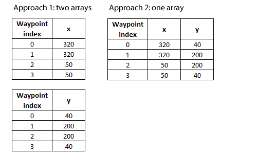
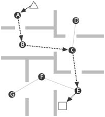

Tutorials for 2D games projects
Enemy waypoint algorithms
It is common in games for enemy sprites to need to move. The movement can often be achieved in 4 ways:
- Simple, predefined movement, e.g. move left and right to the edge of the screen/platform.
- Moving towards another object.
- Moving along a predefined path.
- Using AI and Dijkstra/A* pathfinding algorithms.
Simple predefined movement
This can be achieved with an approach like:
If enemy.x < screen_width and enemy.x > 0 then
enemy.x += movement_speed
else
movement_speed = -movement_speed
End If
Movement_speed would be an integer variable representing the number of pixels to move the object.
Using movement_speed = -movement_speed causes the object to change direction because negative value moves the object to the left, a positive value moves the object to the right. This is a common programming technique to turn a positive number negative, and a negative number positive.
When changing direction, the y position could also be changed resulting in an enemy movement like space invaders.
Moving towards another object

This can be achieved with an approach like:
If enemy.x > player.x then enemy.x -= movement_speed
If enemy.x < player.x then enemy.x += movement_speed
If enemy.y > player.y then enemy.y -= movement_speed
If enemy.y < player.y then enemy.y += movement_speed
The enemy will continually adjust its x and y position to become closer to the player x and y position.
Moving along a predefined path

This can be achieved by storing each of the waypoints in two single dimensional arrays, or a two dimensional array. Each object would have it's own waypoint array.

You can then use a variable to store which waypoint the object is moving towards (0-3). When this becomes 4, reset back to 0. Apply the 'movement towards another object' algorithm for the waypoint co-ordinates like this:
If enemy.x > waypoint_x[number] then enemy.x -= movement_speed
If enemy.x < waypoint_x[number] then enemy.x += movement_speed
If enemy.y > waypoint_y[number] then enemy.y -= movement_speed
If enemy.y < enemy_waypoint_y[number] then enemy.y += movement_speed
If enemy.x = enemy_waypoint_x[number] and enemy = waypoint[number].y then
waypoint += 1
If waypoint > 3 then waypoint = 0
You could easily give the impression that an enemy is moving around a wall by ensuring the waypoints never cause the object to come into contact with the wall. No collision detection is necessary.
Using AI and Dijkstra/A* pathfinding algorithms
These algorithms are part of the A'level specification. Learn the theory of these first, and apply it to a situation illustrated below.

 Craig'n'Dave | Version 1.3
Craig'n'Dave | Version 1.3